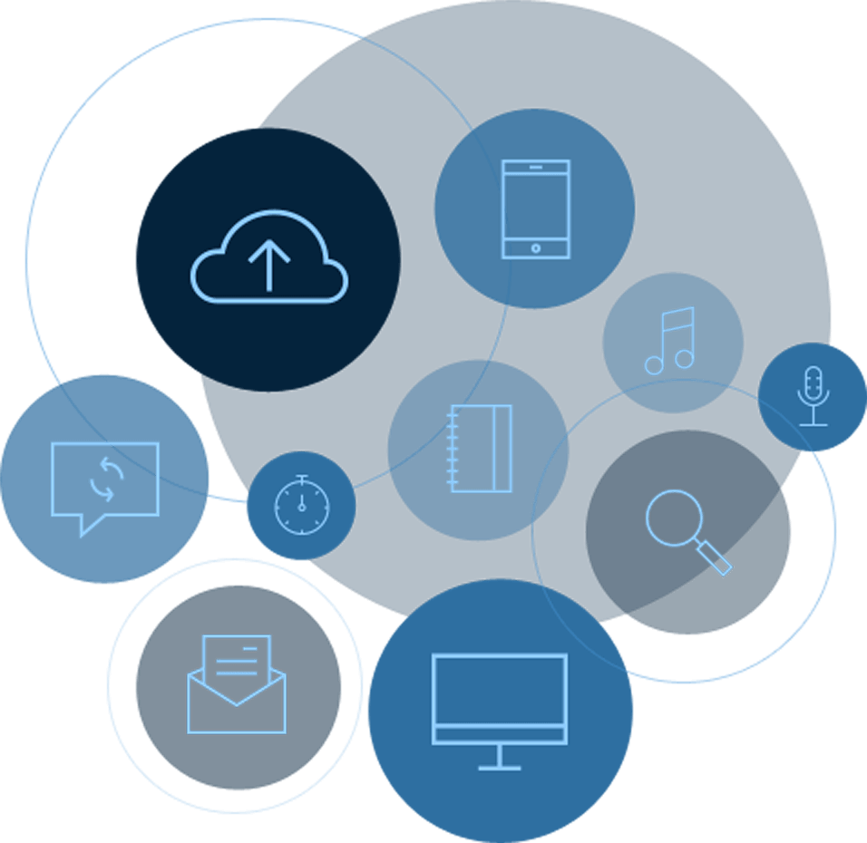
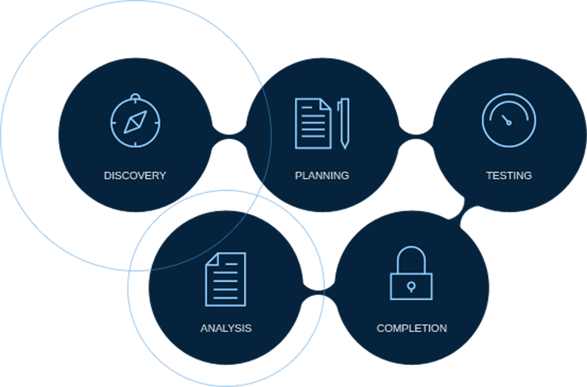

The value of your cloud is determined by one critical thing: how smoothly your applications run on it. We will build applications that function beautifully, scale efficiently, and consistently deliver everything your customers want.

Our Application Development Commitment
Particle 41 builds only the highest quality applications to ensure smooth scaling and outstanding performance.
We build your applications using AWS tools that are well-understood and exceptionally reliable.
Particle 41 ensures that every application it builds will integrate seamlessly with all of your existing services and APIs.
We will (1) update your existing legacy applications so that they are optimized for the cloud and (2) carefully train your team so that your application suite continues to serve your business objectives in the future.

What To Expect
Open communication with the Particle 41 team
The benefit of best-of-breed cloud technologies
Access to all of Particle 41’s technology solutions and proprietary methodologies